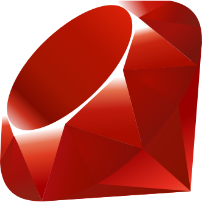

История создания
Язык Ruby создал японский программист Юкихиро Мацумото, которого все называют просто «Мац». Работу над языком он начал , а первая публичная версия вышла в . Мац хотел получить язык более объектно-ориентированный, чем Perl, и более удобный, чем Python. Он взял идеи из Perl, Smalltalk, Eiffel, Ada и Lisp.
Название языка выбрали в шутку: у Perl («жемчужина») и у Ruby («рубин») названия связаны с драгоценными камнями1. Главный принцип, которым руководствовался автор, он описал так:
Я хочу, чтобы программисты были счастливы— Юкихиро Мацумото
Долгое время Ruby был известен в основном в Японии. Всё изменилось в 2004 году, когда Дэвид Хайнемайер Хансон выпустил веб-фреймворк Ruby on Rails. Благодаря ему язык быстро стал популярен во всём мире. На Ruby написаны, например, GitHub и Shopify. Сейчас язык развивается как проект с открытым исходным кодом2.

Ключевые события в истории языка:
- 1993 год — Мац начинает разработку Ruby.
- 1995 год — выходит первая публичная версия 0.95.
- 1996 год — релиз Ruby 1.0.
- 2004 год — появление фреймворка Ruby on Rails.
- 2013 год — выход Ruby 2.0.
- 2020 год — выход Ruby 3.0, который стал втрое быстрее 2.0.
1 Рубин — камень июля, жемчуг — камень июня. 2 Подробнее — на Википедии.
Версии Ruby
| № | Версия | Дата выхода |
|---|---|---|
| 1 | Ruby 1.0 | 25 декабря 1996 года |
| 2 | Ruby 1.8 | 4 августа 2003 года |
| 3 | Ruby 1.9 | 25 декабря 2007 года |
| 4 | Ruby 2.0 | 24 февраля 2013 года |
| 5 | Ruby 2.1 | 25 декабря 2013 года |
| 6 | Ruby 2.2 | 25 декабря 2014 года |
| 7 | Ruby 2.3 | 25 декабря 2015 года |
| 8 | Ruby 2.4 | 25 декабря 2016 года |
| 9 | Ruby 2.5 | 25 декабря 2017 года |
| 10 | Ruby 2.6 | 25 декабря 2018 года |
| 11 | Ruby 2.7 | 25 декабря 2019 года |
| 12 | Ruby 3.0 | 25 декабря 2020 года |
| 13 | Ruby 3.1 | 25 декабря 2021 года |
| 14 | Ruby 3.2 | 25 декабря 2022 года |
| 15 | Ruby 3.3 | 25 декабря 2023 года |
| 16 | Ruby 3.4 | 25 декабря 2024 года |
| Новые версии Ruby традиционно выходят 25 декабря. | ||
Краткий обзор языка
Ruby — это динамический
интерпретируемый язык общего назначения. В нём всё является
объектом, даже числа и nil. Синтаксис похож на
английский язык, поэтому код читается легко. Программы на Ruby
запускаются командой ruby file.rb.
Основные особенности
- чистый объектно-ориентированный подход;
- динамическая типизация;
- блоки,
procи лямбда-выражения; - примеси (mixins) вместо множественного наследования;
- автоматическая сборка мусора.
Где применяется Ruby
- веб-разработка (Ruby on Rails, Sinatra);
- автоматизация и скрипты (Chef, Puppet);
- тестирование (RSpec, Cucumber);
- разработка игр (Ruby 2D, Gosu).
Термины
- Gem
- пакет с библиотекой, который устанавливается командой gem install.
- Блок
- кусок кода, который передаётся методу, например в
each.
Больше информации — на официальном сайте Ruby. Пример смотрите в разделе «Примеры кода».
Примеры кода
Вывод текста и работа с переменными:
# Привет, мир!
puts "Привет, мир!"
name = "Анна"
age = 18
puts "#{name}, тебе #{age} лет"Класс и метод:
class Student
attr_reader :name
def initialize(name, course)
@name = name
@course = course
end
def info
"#{@name}, #{@course} курс"
end
end
student = Student.new("Богдан", 2)
puts student.infoМассивы и блоки:
numbers = [1, 2, 3, 4, 5]
numbers.each do |n|
if n.even?
puts "#{n} — чётное"
else
puts "#{n} — нечётное"
end
end
squares = numbers.map { |n| n * 2 }
p squaresИспользованные теги и CSS-свойства
HTML-теги · 52
aabbrbblockquotebodycaptioncitecodedddivdldtemfigcaptionfigurefooterh1h2h3headheaderhrhtmliimgkbdlilinkmainmarkmetanavolppreqsectionsmallspanstrongsuptabletbodytdtfootththeadtimetitletruul
CSS-свойства · 56
align-itemsbackgroundbackground-colorborderborder-bottomborder-bottom-colorborder-collapseborder-colorborder-leftborder-radiusborder-topborder-top-colorbox-shadowbox-sizingclearcolorcolumn-gapdisplayflex-wrapfloatfontfont-displayfont-familyfont-sizefont-stylefont-weightgapheighthyphensjustify-contentline-heightlist-stylelist-style-imagelist-style-positionmarginmargin-bottommargin-inlinemargin-leftmargin-rightmargin-topmax-widthoverflowoverflow-xpaddingpadding-bottompadding-leftrow-gapscroll-behaviorscroll-padding-topsrctab-sizetext-aligntext-decoration-styletext-underline-offsetwhite-spacewidth